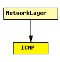

File: Network/IPv4/ICMP.ned
C++ definition: click here
ICMP implementation
Receive ICMP message from localDeliver and process it:
Receive echo/timestamp message from pingIn: encapsulate in ICMP header and send to IPSend
author: Jochen Reber date: 2.5.00, 9.5.00, 20.5.00, 9.6.00 redesign: Andras Varga 1.3.2004
The following diagram shows usage relationships between modules, networks and channels. Unresolved module (and channel) types are missing from the diagram. Click here to see the full picture.
If a module type shows up more than once, that means it has been defined in more than one NED file.
| NetworkLayer | Network layer of an IP node. |
| Name | Direction | Description |
|---|---|---|
| localIn | input | delivered ICMP packets |
| pingIn | input | ping requests from app |
| pingOut | output | result of ping |
| sendOut | output | towards network |
| errorOut | output | errors |
simple ICMP gates: in: localIn; // delivered ICMP packets in: pingIn; // ping requests from app out: pingOut; // result of ping out: sendOut; // towards network out: errorOut; // errors endsimple